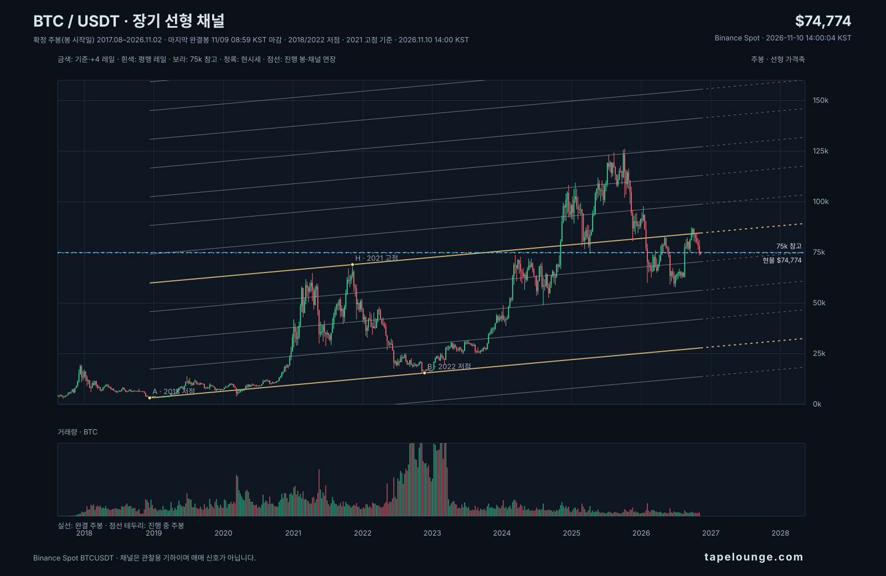
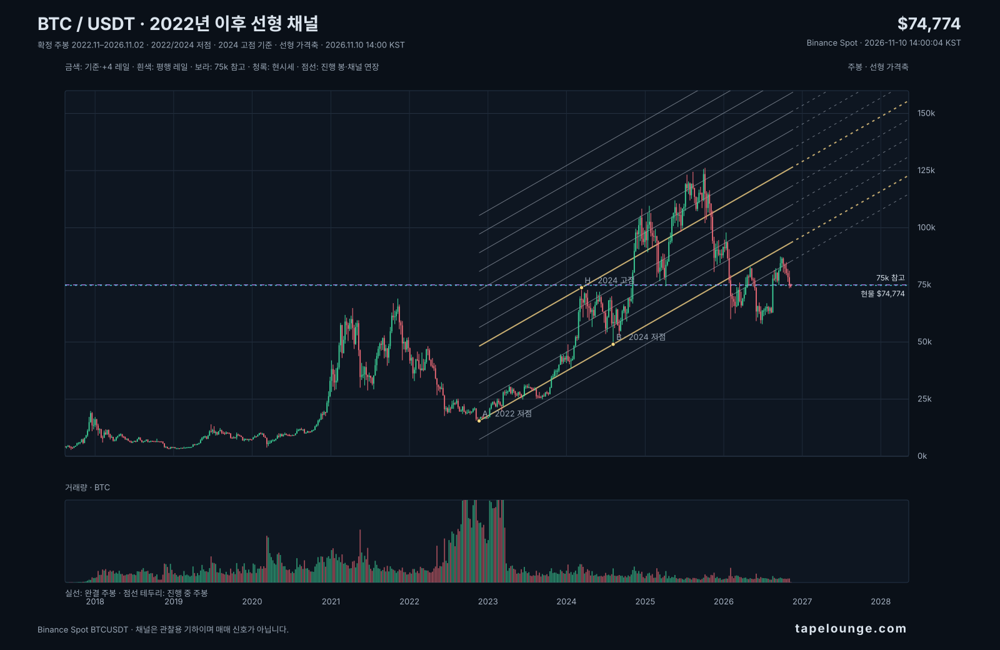

BTC / USDT · CHART STUDY · SNAPSHOT 2026.11.10 14:00 KST
장기 채널, 최신 주봉으로 다시 보기
Binance Spot 주봉. 마지막 완결 주봉은 2026-11-09 KST 마감입니다. 현재 주봉은 2026-11-09 09:00 KST 시작한 미완결 봉이며 실시간 가격은 캡처 시점 값입니다. 가격축은 선형입니다.
2017년 이후 장기 평행 채널 13개
2018-12-10 주 저점 → 2022-11-21 주 저점으로 기준선을 잡고, 2021-11-08 주 고점으로 폭을 정했습니다. 과거 기준점을 유지하고 오른쪽 선은 같은 기울기의 기하학적 연장입니다.

모바일에서 선과 가격을 자세히 보려면 원본 차트 열기를 눌러 확대할 수 있습니다.
75k는 별도 수평 참고선이며 채널선이 아닙니다. 점선은 진행 중인 주봉과 채널의 미래 연장을 구분합니다.
최근 확정 주봉 종가 · 2026-11-09$74,851완결 봉 기준
현재 주봉 실시간 확인값$74,774스냅샷 2026-11-10 14:00:04 KST
장기 채널의 현재 주간 +3 / +4$70,421 / $84,609기하학적 레일 값, 지지·저항 검증 아님
2022년 이후 채널 비교
2022-11-21 저점과 2024-08-05 저점을 잇고 2024-03-11 고점으로 폭을 정한 별도 기울기입니다.

모바일에서 선과 가격을 자세히 보려면 원본 차트 열기를 눌러 확대할 수 있습니다.
읽을 때 유의할 점
- 장기 기준점은 주봉 저점 2018-12-10($3,156)과 2022-11-21($15,476), 폭 기준은 2021-11-08 주 고점($69,000)입니다. 최근 가격에 맞춘 자동 재설정은 없습니다.
- 채널선은 과거 가격을 설명하기 위해 선택한 기하학적 기준입니다. 선 근처에 닿았다는 사실만으로 지지·저항 성공이나 미래 반등 확률을 뜻하지 않습니다.
- 75k는 별도 수평 참고선입니다. 오른쪽 점선은 채널의 수학적 연장이고 미래 캔들이나 목표가가 아닙니다.
- 현재 주봉은 미완결이며 가격과 거래량은 스냅샷 이후 계속 바뀝니다. 역사 범위는 2017년 8월부터로 비트코인 전체 역사는 아닙니다.